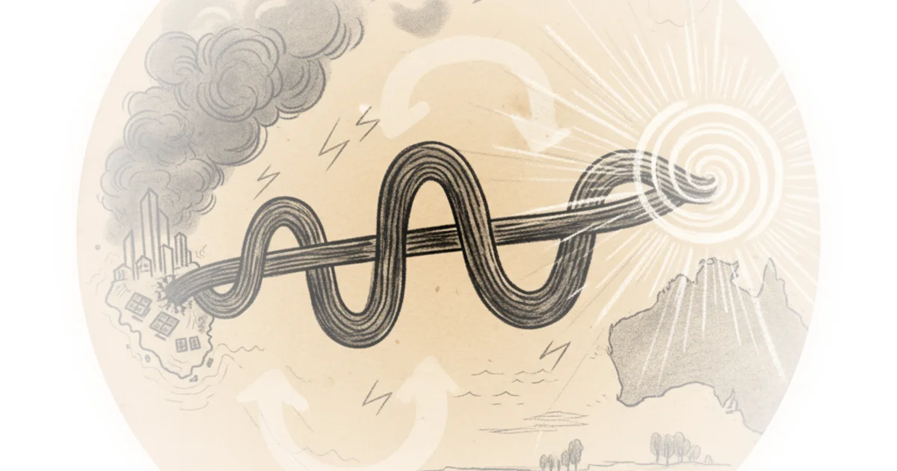
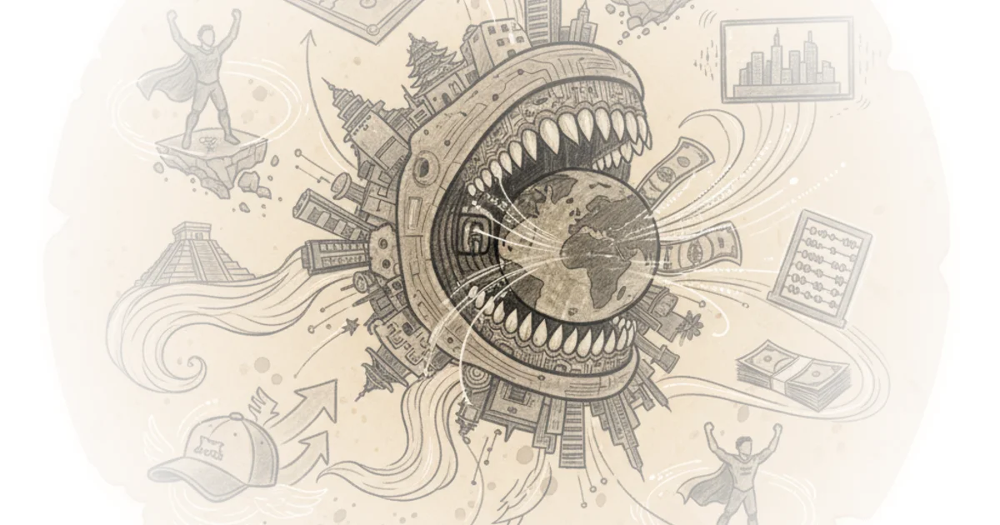
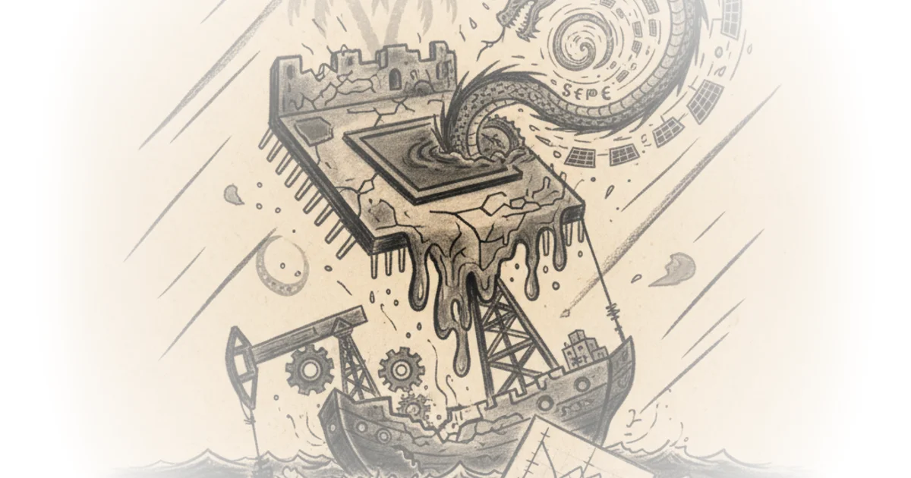
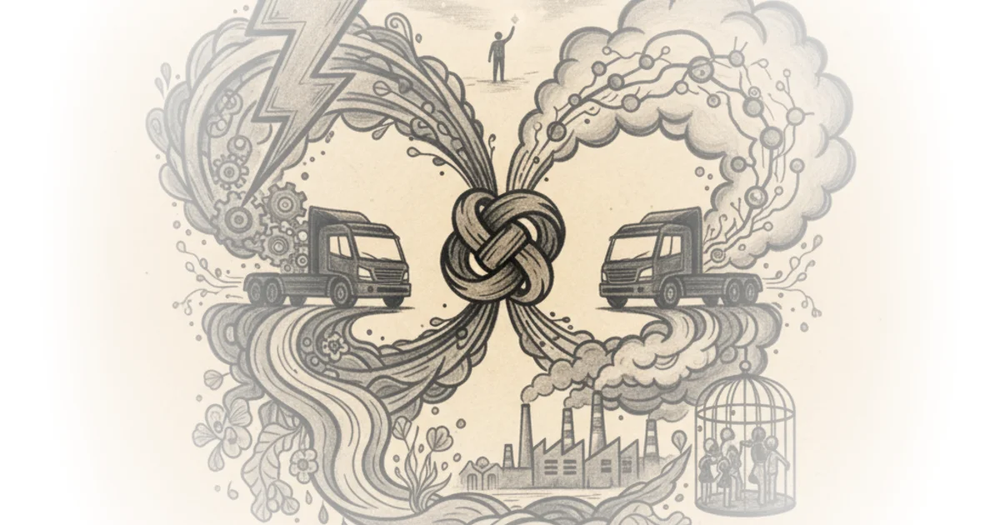
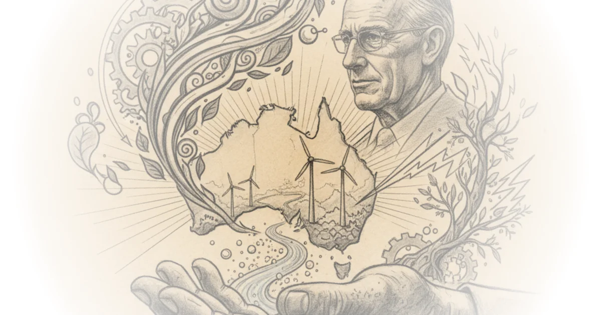

#029: April 26th, 2021 - Longevity Marketcap Telemetry Nathan Cheng · Longevity Marketcap ·Apr 27, 2021 · 23 min read · Science
The Bitcoin Green Revolution - Is Cathie Wood Right About The Environmental Impact of Bitcoin? Patrick Boyle · Patrick Boyle ·Apr 25, 2021 · 11 min read · History
#028: April 19th, 2021 - Longevity Marketcap Telemetry Nathan Cheng · Longevity Marketcap ·Apr 20, 2021 · 16 min read · Science
How Singapore Plans To Pipe Electricity From Australia Asianometry · Asianometry ·Apr 16, 2021 · 13 min read · Science 
#027: April 13th, 2021 - Longevity Marketcap Telemetry Nathan Cheng · Longevity Marketcap ·Apr 13, 2021 · 16 min read · Science
#026: April 5th, 2021 - Longevity Marketcap Telemetry Nathan Cheng · Longevity Marketcap ·Apr 6, 2021 · 13 min read · Science
#025: March 29th, 2021 - Longevity Marketcap Telemetry Nathan Cheng · Longevity Marketcap ·Mar 30, 2021 · 14 min read · Science
#024: March 23, 2021 - Longevity Marketcap Telemetry Nathan Cheng · Longevity Marketcap ·Mar 23, 2021 · 11 min read · Science
#022: A Map of Mitochondria Longevity Companies Nathan Cheng · Longevity Marketcap ·Mar 3, 2021 · 24 min read · Science
#022: A Map of Mitochondria Longevity Companies Nathan Cheng · Longevity Marketcap ·Mar 3, 2021 · 48 min read · Science
How Hong Kong Lost the Lead in Semiconductors Asianometry · Asianometry ·Feb 24, 2021 · 12 min read · AI & Tech
UD #01: Software is eating the rest of the world Derin Adebayo · Unevenly Distributed ·Feb 21, 2021 · 13 min read · AI & Tech 
Asml: Tsmc's Critical Supplier, Explained Asianometry · Asianometry ·Feb 16, 2021 · 11 min read · AI & Tech
Vertical Farming: Growing fast! Dave Borlace · Just Have a Think ·Jan 3, 2021 · 11 min read · Housing & Cities
What Happened to Singapore's Tsmc? Asianometry · Asianometry ·Dec 22, 2020 · 13 min read · AI & Tech 
Batteries in bodywork. Extending the range of cars and planes Dave Borlace · Just Have a Think ·Dec 6, 2020 · 11 min read · AI & Tech
Electric or hydrogen trucks - which one will be the winner? Dave Borlace · Just Have a Think ·Nov 22, 2020 · 14 min read · Science 
Hongxin: China’s Billion Dollar Semiconductor Failure Asianometry · Asianometry ·Oct 26, 2020 · 12 min read · China
The Geopolitics of Taiwanese Pork Imports Asianometry · Asianometry ·Oct 22, 2020 · 12 min read · Foreign Policy
Petrochemicals - can we survive without them? Dave Borlace · Just Have a Think ·Sep 20, 2020 · 13 min read · Science
Green Hydrogen : Can Australia lead the world? Dave Borlace · Just Have a Think ·May 24, 2020 · 11 min read · Science 
The Forgotten Controversy of the 3DS Launch BobbyBroccoli · BobbyBroccoli ·Apr 27, 2020 · 23 min read · AI & Tech
Seedtable #59: The Carbon Complication Gonz Sanchez · Seedtable ·Jan 23, 2020 · 10 min read · Science
Seedtable #58: Dark kitchens and the default path to food Gonz Sanchez · Seedtable ·Jan 16, 2020 · 10 min read · AI & Tech
The World's Most Useful Airport [Documentary] Sam Denby · Wendover Productions ·Dec 31, 2019 · 40 min read · Culture
Seedtable #54: Diversity (and courage) in European tech Gonz Sanchez · Seedtable ·Dec 12, 2019 · 11 min read · AI & Tech